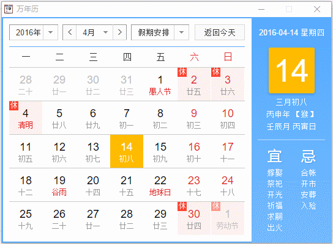
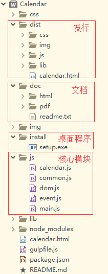
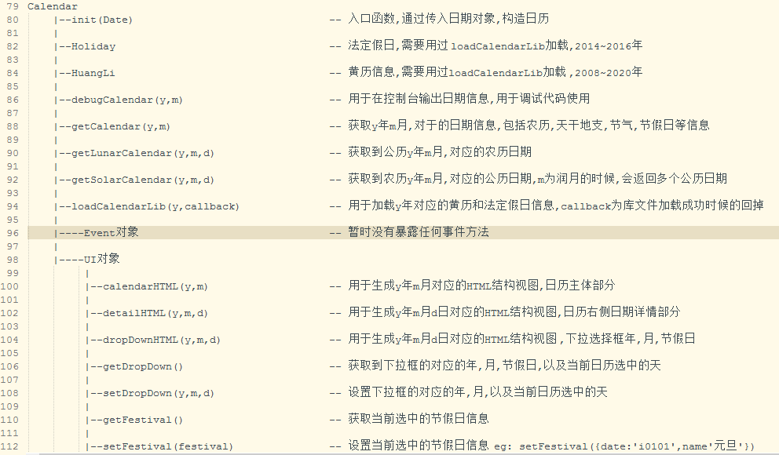
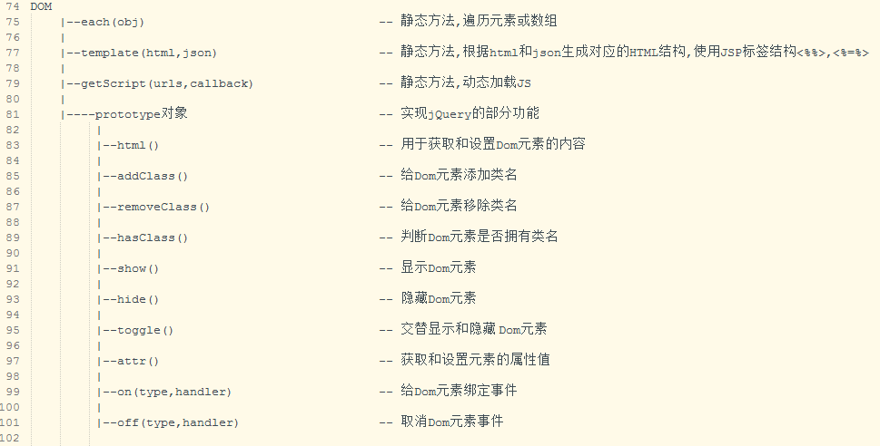
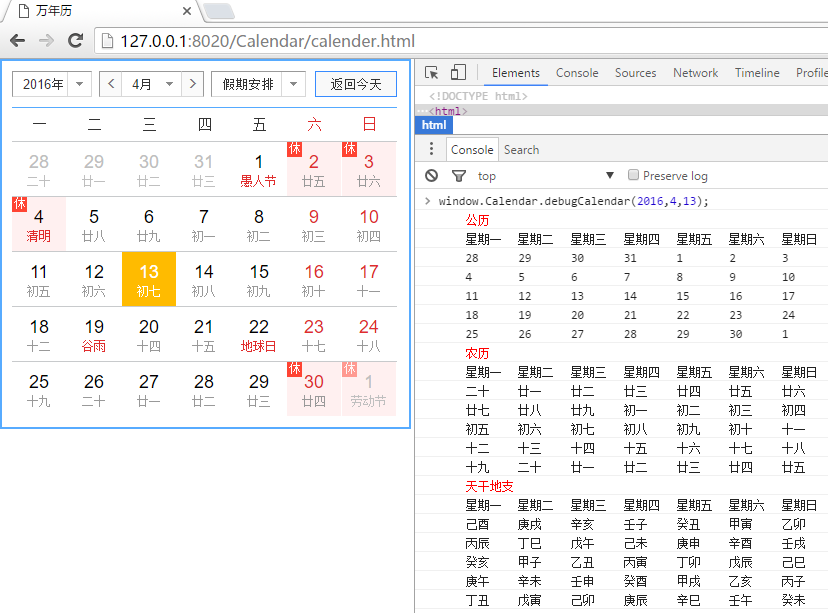
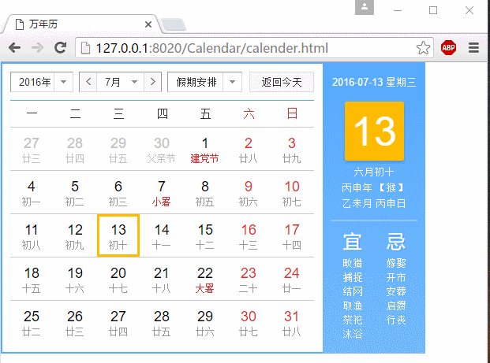

@魏国兴
2016-04-13 23:40
字数 1018
阅读 0
 万年历 Calender
万年历 Calender
一、摘要
二、简介
本款万年历实现了农历，公历，天干地支，24节气，国内国际假日，每日宜忌（08年~20年），节假日（14年~16年）的查询。
万年历界面采用百度日历UI界面，核心JS代码手动编写，没有依赖函数库。代码采用模块式开发，gulp构建，HBuilder开发。
另用node-webkit打包了一版桌面应用，方便使用。

三、开发流程
- 选择一款日历UI（经过筛选，百度日历的UI比较简洁漂亮）。
- 编写JavaScript核心代码，实现农历、公历等日期信息参数的查询。
- 将JavaScript代码和UI界面，整合到一起。期间涉及DOM生成模块（实现模板功能），Event模块，CSS模块（切换主题和UI），日历算法核心模块，仿jQuery模块（工具类）。
- 使用gulp前端构建工具打包发布工程。
- 编写开发文档。
四、主要模块
- 核心算法模块（calender.js）
- 仿jQuery模块，提供工具函数（common.js）
- Dom模块，生成HTML页面结构（dom.js）
- Event模块，日历中各种事件（event.js）
- 入口模块（main.js）
五、目录结构

六、接口文档
日历主要有两个全局变量window.Calendar和window.DOM，Calender类主要实现了日历相关的功能，DOM类实现了主要的jQuery函数。
1. Calendar类

2. Dom类

七、调试日历

八、移动适配
/* 小屏幕（平板，大于等于 768px） */@media (max-width: 600px) {.op-calendar-new-right{display:none;}.c-container{width:409px;border-right: 2px solid #57abff;}}

九、后续开发
- 模块之间通过require加载。
- CSS通过Less等css编译工具编译完成。
- 只做了简单媒体查询样式代码的编写，移动端适配的功能有待完善和开发。
- 对HTML结构要求比较苛刻,暂不支持模板替换和主题替换。
十、总结
限于时间原因，不能更多的书写详细的文档，还希望各位大神拜读源码了。通过该项目又一次发现了自己技术的不足，需要继续学习....
作者 魏国兴
邮箱 1607646162@qq.com
2016 年 04月 13日